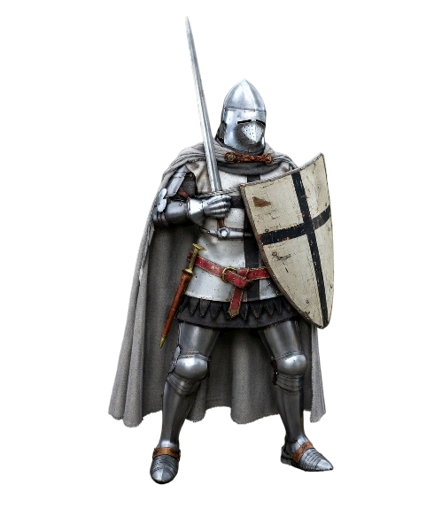

Szent Mária német ispotályosai

Alapítva: 1190 körül Akkóban
Kezdeti cél: német zarándokok és sebesültek ápolása
1198: III. Ince pápa jóváhagyásával katonai lovagrenddé válik
Virágkor: 13–14. század
Főváros: 1309-től Marienburg
Jellemzők:
Ma: Deutscher Orden egyházi rend
Székhely: Ausztria és Németország
Nem katonai szervezet